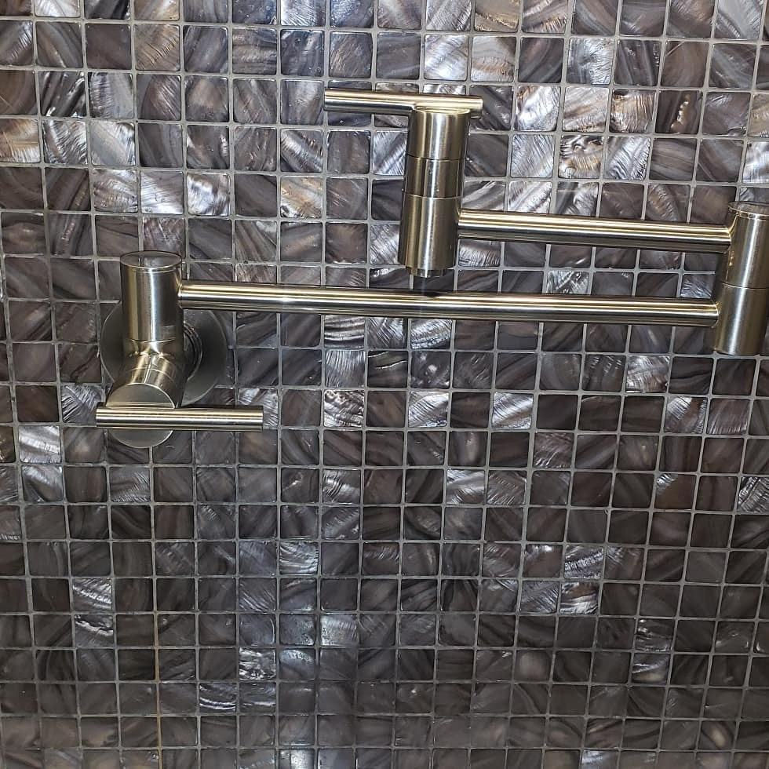
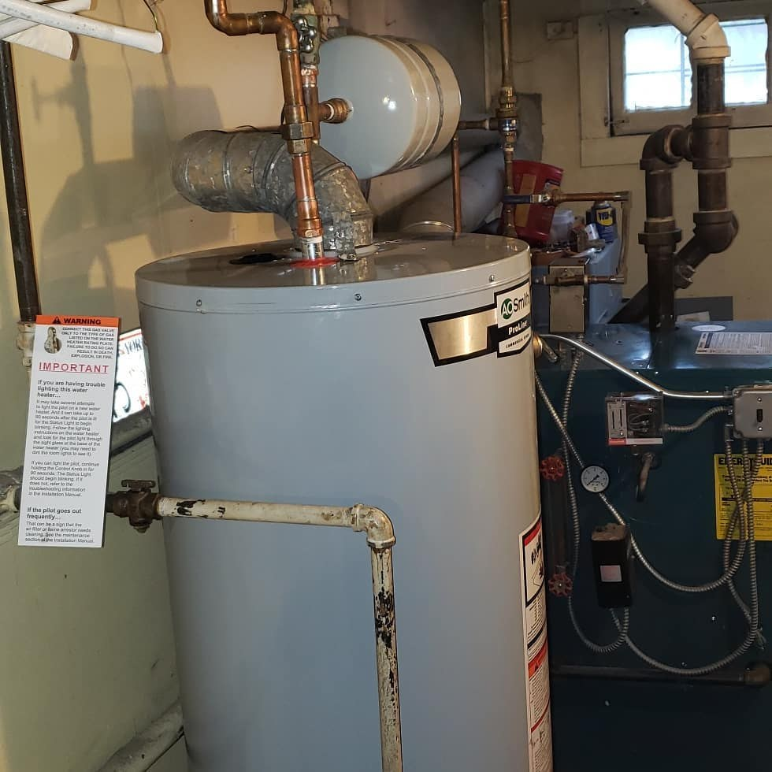
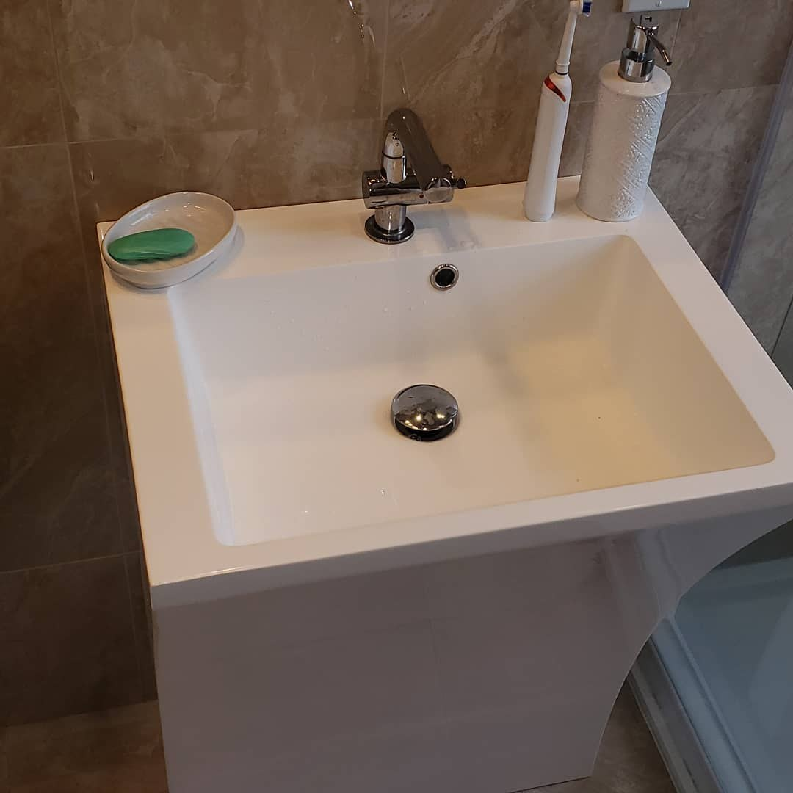
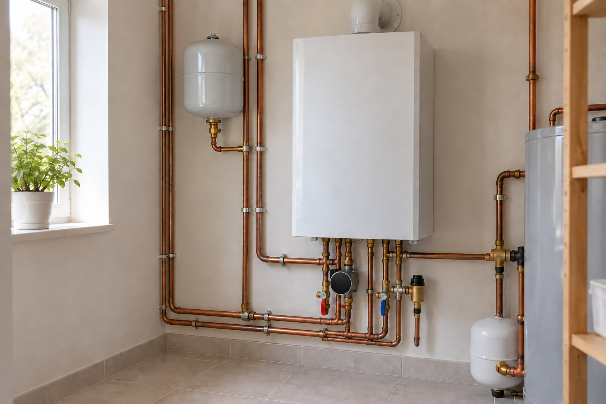
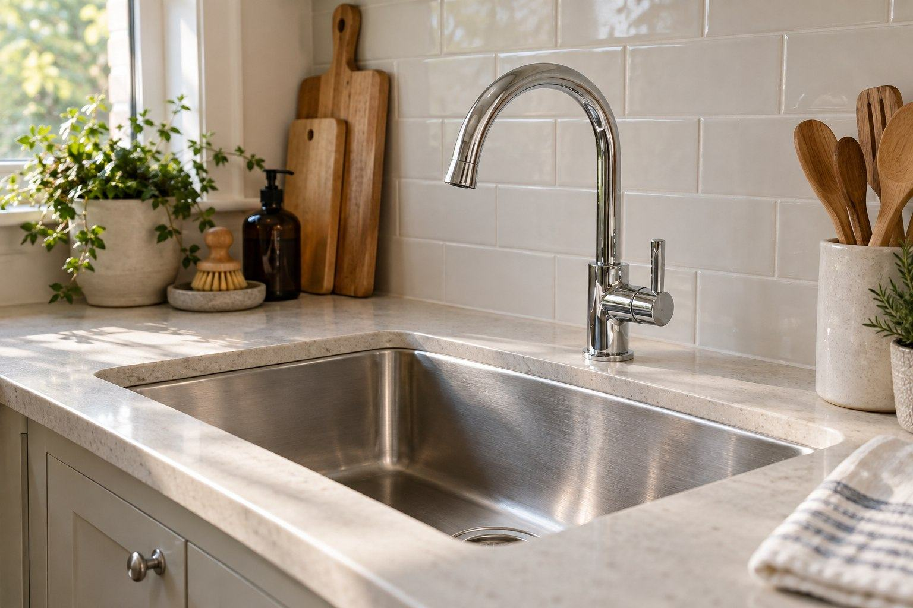

Plumbing repair and installation
Describe the fixture, pipe or installation question.
Ask Lu’s ↗PLUMBING & HEATING · BENSONHURST, BROOKLYN
Fixtures, water heaters and heating piping. Tell us what’s happening in your Bensonhurst home.

WHAT CAN WE HELP WITH?
Describe the fixture, pipe or installation question.
Ask Lu’s ↗Share the water-heater type and what needs attention.
Ask Lu’s ↗Tell us about the boiler or heating pipe involved.
Ask Lu’s ↗Describe the fixture and your repair or installation question.
Ask Lu’s ↗GET IN TOUCH
Share the issue and your Bensonhurst location.
Discuss the fixture, equipment and scope.
Ask your questions and choose a next step.
FIXTURES & SYSTEMS




YOUR NEIGHBORHOOD
Ask Lu’s about plumbing, water heaters, heating piping or fixtures in Bensonhurst, Brooklyn, NY.
Discuss your location ↗Call or send a message with the issue, the equipment involved and your neighborhood. Ask what information is needed to discuss an estimate.
If you smell gas, suspect carbon monoxide or see smoke, leave the building and call 911 or your gas utility from outside. For a leak or loss of heat, avoid hazards and seek appropriate help; do not rely on this website in an emergency.
Ask about service in Bensonhurst, Brooklyn. Contact the business to confirm the location and scope of your request.
Include your name, a way to reach you, your neighborhood and a short description of the issue. You can attach a clear equipment photo in your own messaging or email app. Avoid sensitive personal information.